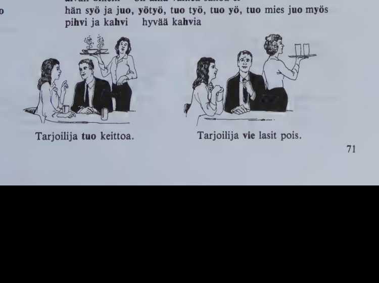
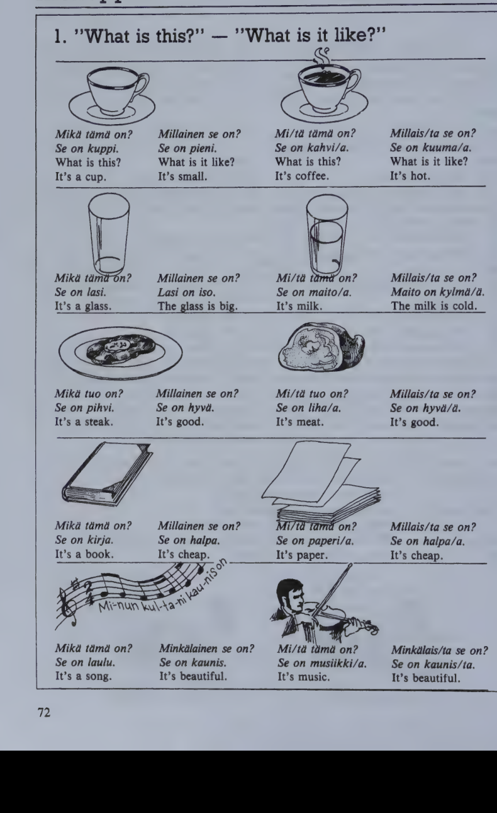
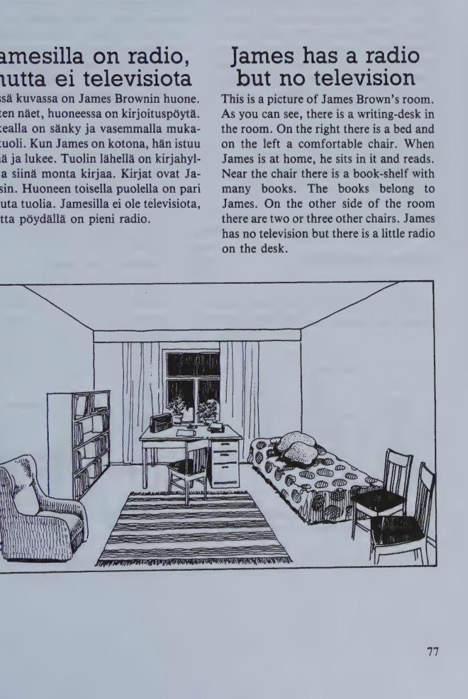
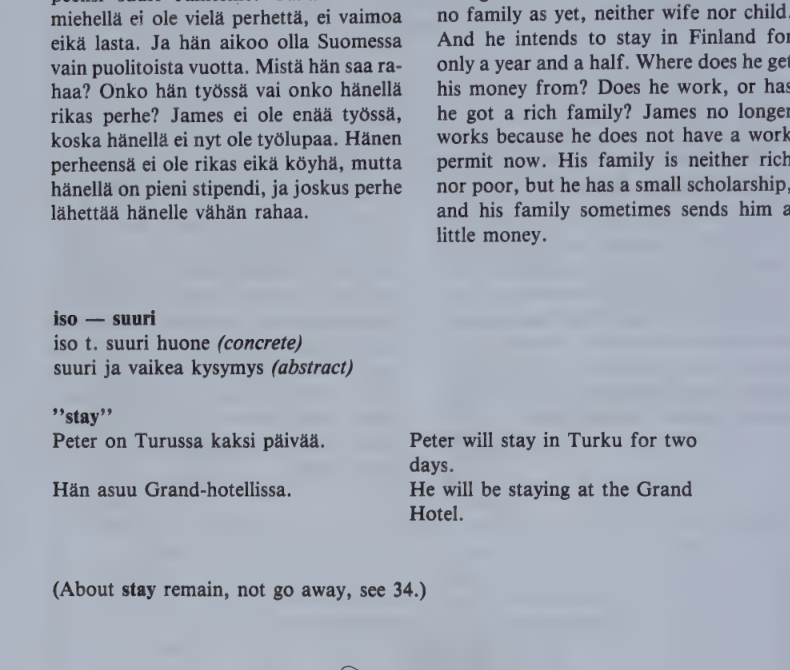
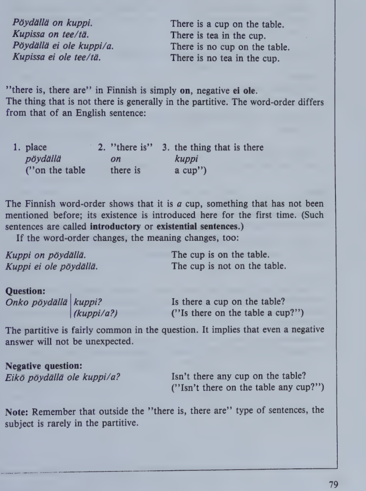
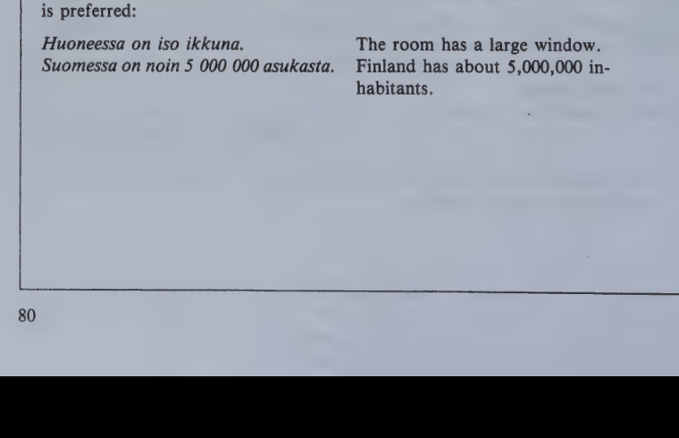

Kappale 15 / Lesson 15#
Vaikea asiakas / A difficult customer#
Suomi |
English |
|---|---|
1. Asiakas. Neiti, mikä tämä on? |
1. Customer. Waitress, what is this? |
2. Tarjoilija. Se on lautanen. |
2. Waitress. It’s a plate. |
3. A. Ei, tämä tässä! Mikä tämä on, sanokaa! |
3. C. No, this here! What is this, tell me? |
4. T. Se on pihvi. |
4. W. It’s a steak. |
5. A. Hyvä neiti, se ei ole pihvi. Se ei ole lihaa. |
5. C. Young lady, it isn’t a steak. It isn’t meat. |
6. T. Mitä se sitten on? |
6. W. What is it then? |
7. A. Se on nahkaa. Vanhaa nahkaa. Viekää se pois! Heti! Ja sanokaa, mitä tuo on? |
7. C. It is leather. Old leather. Take it away! At once! And tell me what that is? |
8. T. Se on kahvia. |
8. W. It’s coffee. |
9. A. Kahvia kahvia. Mutta millaista se on? |
9. C. Coffee, of course. But what’s it like? |
10. T. Hyvää kai. Tämän ravintolan kahvi on aina hyvää. |
10. W. Good, I suppose. Coffee is always good in this restaurant. |
11. A. Ja kuumaa? |
11. C. And hot? |
12. T. Ja kuumaa, aivan niin. |
12. W. And hot, yes. |
13. A. Mutta tämä kahvi on huonoa. Ja aivan kylmää. Viekää se pois! Millainen ravintola tämä on: tuoli on kova, tarjoilija on huono, liha on vanhaa, kahvi on kylmää, vesi on lämmintä, kaikki ruoka on kallista. Viekää kaikki pois. Hyvästi! |
13. C. But this coffee is bad. And completely cold. Take it away! What kind of restaurant is this? The chair is hard, the waitress is bad, the meat is old, the coffee is cold, the water is warm, all the food is expensive. Take everything away. Goodbye! |
long vowels in later syllables
olkaa hyvä ja sanokaa aa, olkaa hyvä ja sanokaa ää!
hyvää iltaa, saanko lihaa, kalaa ja leipää?
tänään hän ottaa hyvää jäätelöä
diphthongs in -i
leipä ja voi vain maitoa, neiti
aivan oikein on aina vaikea sanoa ei
yö-uo
hän syö ja juo, yötyö, tuo työ, tuo yö, tuo mies juo myös
hv
pihvi ja kahvi hyvää kahvia

Kielioppia / Structural notes#
1. “What is this?” - “What is it like?”#

mitä is the partitive of mikä.
When, in questions of the type “what is this?” you ask about a single object, a countable, use mikä (answer: kuppi). When asking about a substance, material, or other uncountables, use mitä (answer: kahvia).
When, in questions of the type “what is this like?” you ask about a single object, a countable, use millainen or minkälainen (answer: pieni). When asking about a substance, material, or other uncountables, use millaista or minkälaista (answer: kuumaa).
LIHA#
Bad mistake: Liha on hyvää.
(More about the complement of the verb “to be” in 22:1 and 34:2.)
Sanasto / Vocabulary#
Finnish |
English |
|---|---|
aivan |
quite, exactly, precisely |
aivan niin |
exactly, just so, that’s it |
+asiakas-ta asiakkaan |
customer, client |
heti |
at once, immediately |
hyvästi! |
goodbye |
kai |
probably, very likely, I suppose |
kova-a-n (# pehmeä) |
hard (not soft); severe, strict |
kuuma-a-n (# kylmä) |
hot |
lautanen lautasta lautasen |
plate |
lämmin-tä lämpimän (# kylmä) |
warm |
minkä/lainen-laista-laisen? (= millainen?) |
what … like? what kind of? |
+nahka-a nah(k)an |
leather, skin |
pihvi-ä-n |
steak |
pois |
away, off |
tässä (cp. täällä) |
right here |
vie/dä (vie/n-t vie vie/mme-tte-vät) (# tuoda) |
to take (somewhere); to export |
*
Finnish |
English |
|---|---|
kuin |
as; than |
Kappale 16 / Lesson 16#
Kuinka monta? / How many?#
James Brown on tavallinen mukava nuori mies, joka on 20 vuotta vanha. Hän on 180 senttiä pitkä ja painaa 75 kiloa. Hänellä on rahaa 10 markkaa 50 penniä.
Jamesilla on niin vähän rahaa, koska hän oli juuri ostoksilla.

Nyt James tekee ruokaa Mattilan keittiössä. Mutta hän ei ole siellä yksin. Mattilan Tapani on myös siellä, ja Tiina, perheen toinen lapsi, tulee juuri sisään. Tapani on kymmenen ja Tiina seitsemän vuotta vanha. Tiinalla on kaksi kissaa. Toinen on valkoinen, toinen musta. Ne juovat maitoa keittiössä. Lapset syövät jäätelöä ja puhuvat Jamesin kanssa.
Montako huonetta Mattilan perheellä on? Neljä huonetta ja keittiö.
Liisalla on 15 mk ja Lailalla 28 mk. Paljonko rahaa heillä on yhteensä?

Kielioppia / Structural notes#
1. Partitive singular with cardinal numbers#
Partitive singular is used after cardinal numbers (except yksi one) and after the word monta many:
Finnish |
English |
|---|---|
yksi kirja |
one book |
kaksi kirja/a |
two books |
yksi talo |
one house |
kolme talo/a |
three houses |
yksi mies |
one man |
sata mies/tä |
a hundred men |
yksi omena |
one apple |
kuinka monta omena/a? |
how many apples? |
yksi salaisuus |
one secret |
monta salaisuut/ta |
many secrets |
If the subject of a sentence consists of a cardinal number + noun, the verb will be in the singular:
(Yksi) kirja maksaa 30 markkaa.
Kaksi kirjaa maksaa 60 markkaa.
Kolme autoa tulee Mikonkadulle.
2. About foreign loanwords in Finnish#
Finnish, like all languages, has borrowed words from other tongues during the different periods of its history, mostly from the neighboring Indo-European languages.
Most loanwords from other languages (except for the most recent) have been “Finnicized”
by changing foreign consonants to their domestic equivalents, esp. b, d, g to p, t, k (e.g. kulta gold);
by dropping initial consonants except for the last (e.g. koulu school, Ranska France);
by adding a final vowel, most typically -i, to words ending in a consonant (e.g. pommi bomb, lasi glass).
Examples: viikko, minuutti, numero, pankki, metalli, passi, silkki, nailon, sokeri, kakku, riisi, vitamiini, konsertti, orkesteri, sirkus, tennis, kulttuuri, akateeminen, fysiikka, matematiikka, teksti, tyyli, arkkitehtuuri, huumori, normaali, romanttinen, romantiikka, atomi, tekniikka, politiikka, ministeri, prinssi, senaatti, sosialisti, kommunismi, kameli, tiikeri, tulppaani, kaktus, temppeli, alttari, paratiisi.
Sanasto / Vocabulary#
Finnish |
English |
|---|---|
gramma-a-n (abbr. g) |
gram |
juuri |
just, exactly |
juusto-a-n |
cheese |
keittiö-tä-n |
kitchen |
kilo-a-n (abbr. kg) |
kilogram |
litra-a-n (abbr. l) |
liter |
makkara-a-n |
sausage |
moni monta monen |
many |
montako? = kuinka monta? |
how many? |
muna-a-n |
egg |
musta-a-n |
black |
myyjä-ä-n (from myy/dä to sell) |
salesclerk; vendor |
+nakki-a nakin |
frankfurter |
ostoksilla: olla o. |
to be shopping |
mennä ostoksille |
to go shopping |
paina/a (paina/n-t-a-mme-tte-vat) |
to weigh (= have a certain weight); to press; to print |
pitkä-ä-n (# lyhyt) |
long; tall |
puoli puolta puolen |
half; side |
+sentti-ä sentin (abbr. cm) |
centimeter; cent |
sisään (# ulos) |
in; “come in!” |
tavallinen tavallista tavallisen |
usual, ordinary, frequent |
toinen toista toisen |
other, another; second; one of the two |
toinen … toinen |
one … the other |
vuoro-a-n |
turn; shift (at work) |
*
Finnish |
English |
|---|---|
+pankki-a pankin |
bank |
pari-a-n |
pair; couple; two or three |
Kappale 17 / Lesson 17#
Jamesilla on radio, mutta ei televisiota / James has a radio but no television#
Tässä kuvassa on James Brownin huone. Kuten näet, huoneessa on kirjoituspöytä. Oikealla on sänky ja vasemmalla mukava tuoli. Kun James on kotona, hän istuu siinä ja lukee. Tuolin lähellä on kirjahylly ja siinä monta kirjaa. Kirjat ovat Jamesin. Huoneen toisella puolella on pari muuta tuolia. Jamesilla ei ole televisiota, mutta pöydällä on pieni radio.

Huone ei ole suuri, mutta se on tarpeeksi suuri Jamesille. Tällä nuorella miehellä ei ole vielä perhettä, ei vaimoa eikä lasta. Ja hän aikoo olla Suomessa vain puolitoista vuotta. Mistä hän saa rahaa? Onko hän työssä vai onko hänellä rikas perhe? James ei ole enää työssä, koska hänellä ei nyt ole työlupaa. Hänen perheensä ei ole rikas eikä köyhä, mutta hänellä on pieni stipendi, ja joskus perhe lähettää hänelle vähän rahaa.
iso - suuri
iso t. suuri huone (concrete)
suuri ja vaikea kysymys (abstract)
“stay”
Peter on Turussa kaksi päivää.
Hän asuu Grand-hotellissa.
(About stay remain, not go away, see 34.)

Kielioppia / Structural notes#
1. “there is, there are” sentences#
Finnish |
English |
|---|---|
Pöydällä on kuppi. |
There is a cup on the table. |
Kupissa on tee/tä. |
There is tea in the cup. |
Pöydällä ei ole kuppi/a. |
There is no cup on the table. |
Kupissa ei ole tee/tä. |
There is no tea in the cup. |
“there is, there are” in Finnish is simply on, negative ei ole.
The thing that is not there is generally in the partitive. The word-order differs from that of an English sentence:
place: pöydällä (“on the table”)
“there is”: on
the thing that is there: kuppi (“a cup”)
The Finnish word-order shows that it is a cup, something that has not been mentioned before; its existence is introduced here for the first time. (Such sentences are called introductory or existential sentences.)
If the word-order changes, the meaning changes, too:
Kuppi on pöydällä. The cup is on the table.
Kuppi ei ole pöydällä. The cup is not on the table.
Question:
Onko pöydällä kuppi?
(kuppi/a?)
Is there a cup on the table?
(“Is there on the table a cup?”)
The partitive is fairly common in the question. It implies that even a negative answer will not be unexpected.
Negative question:
Eikö pöydällä ole kuppi/a?
Isn’t there any cup on the table?
(“Isn’t there on the table any cup?”)
Note: Remember that outside the “there is, there are” type of sentences, the subject is rarely in the partitive.
2. “have” sentences#
Finnish |
English |
|---|---|
Miehellä on markka. |
The man has a mark. |
Hänellä on pikkuraha/a. |
He has small change. |
Naisella ei ole markka/a. |
The woman does not have a mark. |
Hänellä ei ole pikkuraha/a. |
She doesn’t have small change. |
The thing not possessed is generally in the partitive.
Question:
Onko tytöllä markka?
(markka/a?)
Does the girl have a mark?
The partitive in the question implies that even a negative answer will not be unexpected.
Negative question:
Eikö pojalla ole markka/a?
Doesn’t the boy have a mark?
Note:
Minulla on nälkä, kylmä etc. I am hungry, cold etc.
Minulla ei ole nälkä, kylmä etc. I am not hungry, cold etc.
Onko sinulla/eikö sinulla ole jano? Are you/are you not thirsty?
In certain expressions using “have” (but not expressing possession), the partitive is not used in the negative sentence.
Note also:
As the sentence hänellä on rahaa actually means “there is money in his possession”, the Finnish “have” structure is mostly limited to subjects who can possess something, esp. to human beings. Otherwise, the “there is” structure is preferred:
Huoneessa on iso ikkuna. The room has a large window.
Suomessa on noin 5 000 000 asukasta. Finland has about 5,000,000 inhabitants.
Sanasto / Vocabulary#
Finnish |
English |
|---|---|
ei … eikä |
neither … nor |
hylly-ä-n |
shelf |
joskus |
some time; sometimes |
+kirjoitus/pöytä-ä-pöydän |
writing-desk |
kun |
when; (sometimes also:) because |
kuten |
like, as, such as |
köyhä-ä-n |
poor (= not rich) |
+luke/a |
to read |
lue/n-t lukee lue/mme-tte lukevat |
|
lähellä |
near, close to, close by |
pöydä/n lähellä |
near the table |
+lähettää |
to send |
lähetä/n-t lähettää lähetä/mme-tte lähettävät |
|
+näh/dä |
to see |
näe/n-t näkee näe/mme-tte näkevät |
|
puoli/toista |
one and a half; 2 1/2 |
+rikas-ta rikkaan |
rich |
siinä (“in” case of se) |
in it; (right) there |
suuri suurta suuren (# pieni) |
big, large; great |
+sänky-ä sängyn |
bed |
tarpeeksi |
enough |
+työ/lupa-a-luvan |
work permit |
*
Finnish |
English |
|---|---|
jano-a-n |
thirst |
kiire-ttä-en |
haste, hurry |
minulla on kiire |
I’m in a hurry, I’m busy |
paha-a-n (# hyvä) |
bad, ill, evil, wicked |
minulla on paha olla |
I feel bad, I feel ill |
+nälkä-ä nälän |
hunger |
puu-ta-n |
tree; wood |